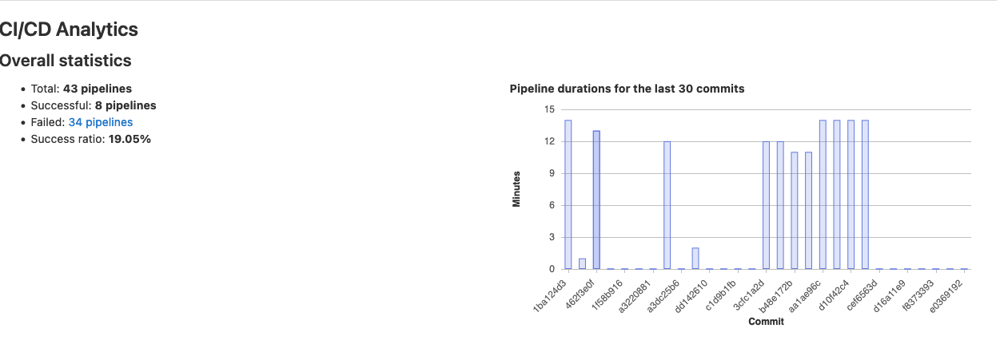

Alpine Containers
They compile so much from source that it really slows it down when you start with a vanilla container each run of your pipeline. In my case the solution was to build a new container with a bunch of the compiled dependencies built. Prior to that pipelines even when failing would take an average of 12 minutes to reach failure.

Afterwards a successful test run takes about a minute, with the brunt of the time sink being pushed off to a separate repo for building the image. On that side its about 48 minutes to generate the image however having it take place in an entirely is worth it for the saved time on rapid re-testing.